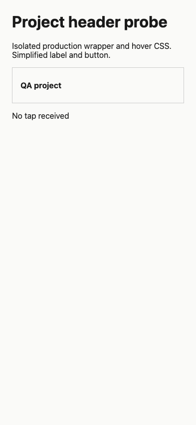
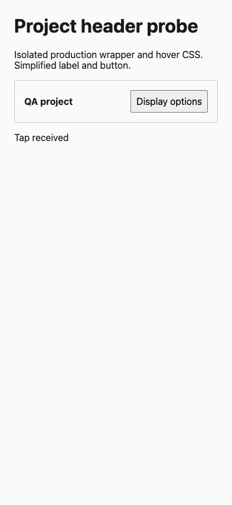

#3330 · Missing touch visibility on project header controls
Verdict: REPRODUCED · Root-cause confidence: high
1. TL;DR
The individual project header wraps its display control in a hover-only container. That container lacks the marker which makes adjacent project actions visible on compact touch screens. A browser fixture extracted from the production JSX and CSS reproduces an invisible control that rejects touch input in two clean checkouts. Applying the existing marker makes the same browser assertion pass and lets a touch tap reach the control.
This is a focused component/CSS reproduction, not a screenshot of the full BB app. The fixture uses simplified text and a button inside the unmodified production wrapper; it does not simulate the real display-options menu. Full-app and Safari checks are not established by this evidence.
2. Claims vs findings
| Claim | Finding | Evidence |
|---|---|---|
| Project display control is hidden on compact touch screens | Verified at wrapper/CSS boundary | Both clean browser runs: opacity 0, pointer-events none, real tap missed |
| The media-query condition is satisfied | Verified | 393 × 852, pointer coarse and max-width 767px both true |
| Other project actions use the mobile marker | Verified in source | Adjacent actions container already opts into mobile visibility |
| Built-in section menus are unaffected | Source reviewed; full menu journey unverified | Separate section action containers use the mobile marker |
| Historical release affected | Unverified | Only latest trusted origin/main was executed |
3. Environment
Trusted repository: public get-bb/bb. Base: a86e829f42edb4ab0960f3d8b55a17785860cf75, fetched from origin/main on 2026-09-09. Darwin arm64, Node 22.22.3, pnpm 9.15.0 via a temporary Corepack shim, Vitest 4.1.1, headless Chrome controlled by doobie 0.1.2. No provider sessions, credentials, imported stores, or user data were used. Static fixture servers bound only to 127.0.0.1:48930 and :48931. The browser used a dedicated temporary-task profile.
4. Minimal reproduction
- Download the fixture extractor. Create an empty output directory, then run the commands below using the trusted commit.
- Open the generated fixture in Chrome at 393 × 852 with touch enabled.
- Inspect the control wrapper and tap the geometric center of the hidden button. Expected: opacity 1, pointer-events auto, and the text changes to “Tap received”. Actual: opacity 0, pointer-events none, and “No tap received” remains.
- For the React regression, copy the test file into the same repository path and run
pnpm exec turbo run test --filter=@bb/app -- ProjectRow.interactions --testNamePattern='keeps project header controls' --maxWorkers=1 --testTimeout=60000.
git clone --branch main https://github.com/get-bb/bb.git bb-3330 cd bb-3330 git checkout a86e829f42edb4ab0960f3d8b55a17785860cf75 pnpm install --frozen-lockfile --prefer-offline pnpm exec turbo run build node /path/to/render-fixture.cjs "$PWD" /tmp/3330-repro/base.html python3 -m http.server 48930 --bind 127.0.0.1 --directory /tmp/3330-repro
Repeatable browser check · Two-run browser output · Generated baseline fixture
base before { opacity: '0', pointerEvents: 'none', coarse: true, compact: true, hit: '', result: 'No tap received' }
base after tap { opacity: '0', pointerEvents: 'none', coarse: true, compact: true, hit: '', result: 'No tap received' }
verify before { opacity: '0', pointerEvents: 'none', coarse: true, compact: true, hit: '', result: 'No tap received' }
verify after tap { opacity: '0', pointerEvents: 'none', coarse: true, compact: true, hit: '', result: 'No tap received' }
The visibility assertion failed before the fix with:
Error: Expected visible tappable header control; got {"opacity":"0","pointerEvents":"none"}



Fixture extractor source
const fs = require('node:fs');
const path = require('node:path');
const { createRequire } = require('node:module');
const root = path.resolve(process.argv[2]);
const req = createRequire(path.join(root, 'apps/app/package.json'));
const ts = req('typescript');
const React = req('react');
const { renderToStaticMarkup } = req('react-dom/server');
const source = fs.readFileSync(path.join(root, 'apps/app/src/components/sidebar/ProjectRow.tsx'), 'utf8');
const start = source.indexOf('{headerActions ? (', source.indexOf('const projectActions ='));
const end = source.indexOf(') : null}', start) + ') : null}'.length;
if (start < 0 || end < start) throw new Error('Header slot not found');
const constants = fs.readFileSync(path.join(root, 'apps/app/src/components/ui/sidebar-hover-actions.ts'), 'utf8');
const constant = name => {
const match = constants.match(new RegExp('export const ' + name + '\\s*=\\s*"([^"]+)"'));
if (!match) throw new Error('Constant not found: ' + name);
return match[1];
};
const jsx = 'return <>' + source.slice(start, end) + '</>;';
const compiled = ts.transpileModule('function fixture(){' + jsx + '}', {compilerOptions:{jsx:ts.JsxEmit.React, target:ts.ScriptTarget.ES2022}}).outputText;
const make = new Function('React','headerActions','headerActionsOpen','SIDEBAR_HOVER_ACTIONS_CLASS','SIDEBAR_HOVER_ACTIONS_MOBILE_ALWAYS_VALUE',compiled + ';return fixture();');
const control = React.createElement('button', {'aria-label':'Display options', id:'display'}, 'Display options');
const markup = renderToStaticMarkup(make(React, control, false, constant('SIDEBAR_HOVER_ACTIONS_CLASS'), constant('SIDEBAR_HOVER_ACTIONS_MOBILE_ALWAYS_VALUE')));
const theme = fs.readFileSync(path.join(root, 'apps/app/src/components/ui/theme.css'), 'utf8');
const cssStart = theme.indexOf(' .bb-sidebar-hover-actions {');
const cssEnd = theme.indexOf(' [data-sidebar-sticky-stack]', cssStart);
if (cssStart < 0 || cssEnd < 0) throw new Error('Hover CSS not found');
const css = theme.slice(cssStart, cssEnd);
const html = '<!doctype html><html><head><meta name="viewport" content="width=device-width,initial-scale=1"><style>' + css + '\nbody{font:16px system-ui;margin:24px;background:#fafaf8;color:#1a1a1a}section{border:1px solid #ccc;padding:16px}button{font:inherit;padding:8px}.bb-sidebar-hover-actions-row{display:flex;align-items:center;justify-content:space-between;gap:8px}</style></head><body><h1>Project header probe</h1><p>Isolated production wrapper and hover CSS. Simplified label and button.</p><section class="bb-sidebar-hover-actions-row"><strong>QA project</strong>' + markup + '</section><p id="result">No tap received</p><script>document.querySelector("#display").onclick=()=>document.querySelector("#result").textContent="Tap received";</script></body></html>';
fs.writeFileSync(process.argv[3], html);
console.log(JSON.stringify({wrapper:markup,source:'ProjectRow.tsx',css:'theme.css'}));
Regression test source
// @vitest-environment jsdom
import {
cleanup,
fireEvent,
render,
screen,
waitFor,
} from "@testing-library/react";
import type { ThreadListEntry } from "@bb/domain";
import { afterEach, describe, expect, it, vi } from "vitest";
import type { ReactNode } from "react";
import { MemoryRouter } from "react-router-dom";
import { TooltipProvider } from "@bb/shared-ui/tooltip";
import { Provider, createStore } from "jotai";
import { QueryClient, QueryClientProvider } from "@tanstack/react-query";
import {
ChronologicalSectionThreadSections,
ProjectRow,
type ProjectThreadListState,
} from "./ProjectRow";
import { buildSidebarEntitySectionId } from "@bb/client-core";
import { makeThreadListEntry } from "@bb/test-helpers/domain-fixtures";
import { makeProjectResponse } from "@/test/fixtures/projects";
const mockUpdateEnvironment = vi.hoisted(() => ({
mutate: vi.fn(),
reset: vi.fn(),
}));
const mockArchiveEnvironmentThreads = vi.hoisted(() => ({
mutateAsync: vi.fn(async () => ({ ok: true, archivedThreadIds: [] })),
}));
const mockDraftThreadIds = vi.hoisted(() => ({
current: new Set<string>(),
}));
vi.mock("@/hooks/useLocalPathPicker", () => ({
usePathPickerHost: () => ({ hostId: null, hostName: null }),
}));
vi.mock("@/hooks/mutations/environment-mutations", () => ({
useArchiveEnvironmentThreads: () => ({
isPending: false,
mutateAsync: mockArchiveEnvironmentThreads.mutateAsync,
variables: undefined,
}),
useUpdateEnvironment: () => ({
error: null,
isPending: false,
mutate: mockUpdateEnvironment.mutate,
reset: mockUpdateEnvironment.reset,
variables: undefined,
}),
}));
vi.mock("@/hooks/useCreateThreadInEnvironment", () => ({
useCreateThreadInEnvironment: () => vi.fn(),
}));
vi.mock("@/hooks/usePromptDraftStorage", () => ({
usePromptDraftHasInput: () => false,
usePromptDraftInputThreadIds: () => mockDraftThreadIds.current,
}));
vi.mock("@/components/project/ProjectActionsProvider", () => ({
useProjectActions: () => ({
requestRename: vi.fn(),
requestDelete: vi.fn(),
requestAddLocalPath: vi.fn(),
}),
}));
vi.mock("@/components/thread/ThreadActionsProvider", () => ({
useThreadActions: () => ({
renameThread: vi.fn(),
requestRename: vi.fn(),
requestDelete: vi.fn(),
archiveThreadAndChildren: vi.fn(),
unarchiveThread: vi.fn(),
togglePin: vi.fn(),
toggleRead: vi.fn(),
}),
}));
function makeThread(overrides: Partial<ThreadListEntry> = {}): ThreadListEntry {
return makeThreadListEntry({
id: "thr_test",
title: "Test thread",
titleFallback: "Test thread",
...overrides,
});
}
function renderProjectRow(
onToggleProjectCollapsed = vi.fn(),
threadListState: ProjectThreadListState = { status: "ready", threads: [] },
isActive = false,
collapsedEnvironmentIds: Set<string> = new Set(),
isCollapsed = false,
headerActions?: ReactNode,
headerActionsOpen = false,
) {
const onToggleEnvironmentCollapsed = vi.fn();
const result = render(
<TooltipProvider>
<QueryClientProvider client={new QueryClient()}>
<MemoryRouter>
<ProjectRow
project={makeProjectResponse()}
threadListState={threadListState}
isActive={isActive}
isCollapsed={isCollapsed}
compareThreads={() => 0}
progressiveDisclosureEnabled
collapsedThreadIds={new Set()}
collapsedEnvironmentIds={collapsedEnvironmentIds}
isLocalPathInvalid={false}
headerActions={headerActions}
headerActionsOpen={headerActionsOpen}
onToggleProjectCollapsed={onToggleProjectCollapsed}
onToggleThreadCollapsed={vi.fn()}
onToggleEnvironmentCollapsed={onToggleEnvironmentCollapsed}
/>
</MemoryRouter>
</QueryClientProvider>
</TooltipProvider>,
);
return { ...result, onToggleEnvironmentCollapsed, onToggleProjectCollapsed };
}
function expectCollapsedActivityAtSidebarEdge(label: string) {
const edgeSlot = screen
.getAllByLabelText(label)
.map((indicator) =>
indicator.closest("[data-sidebar-collapsed-activity-edge]"),
)
.find((slot) => slot !== null);
expect(edgeSlot).toBeInstanceOf(HTMLElement);
}
describe("ProjectRow interactions", () => {
afterEach(() => {
cleanup();
mockDraftThreadIds.current = new Set();
vi.clearAllMocks();
});
it.each([false, true])(
"keeps project header controls available to touch when open is %s",
(open) => {
renderProjectRow(
vi.fn(),
{ status: "ready", threads: [] },
false,
new Set(),
false,
<button aria-label="Header display control" />,
open,
);
const actions = screen
.getByRole("button", { name: "Header display control" })
.closest(".bb-sidebar-hover-actions");
expect(actions?.getAttribute("data-sidebar-hover-actions-mobile")).toBe(
"always",
);
expect(actions?.getAttribute("data-sidebar-hover-actions-open")).toBe(
open ? "true" : null,
);
},
);
it("places the project disclosure after its label and keeps root threads flush", () => {
const result = renderProjectRow(vi.fn(), {
status: "ready",
threads: [makeThread()],
});
const disclosure = screen.getByRole("button", {
name: "Collapse Test project section",
});
const label = screen.getByTitle("Test project");
const threadLink = result.container.querySelector(
'[data-sidebar-thread-id="thr_test"]',
);
const projectGroup = result.container.querySelector(
"[data-sidebar-sticky-project-item]",
);
expect(
label.compareDocumentPosition(disclosure) &
Node.DOCUMENT_POSITION_FOLLOWING,
).not.toBe(0);
expect(
(threadLink?.parentElement as HTMLElement | null)?.style.paddingLeft,
).toBe("8px");
expect(projectGroup?.getAttribute("data-sidebar-project-id")).toBe(
"proj_test",
);
expect(projectGroup?.hasAttribute("data-sidebar-section-id")).toBe(false);
});
it("shows generic runtime activity before a named workflow rollup", () => {
renderProjectRow(
vi.fn(),
{
status: "ready",
threads: [
makeThread({
id: "thr_worktree_workflow",
status: "active",
environmentId: "env_test",
environmentName: "Feature workspace",
environmentBranchName: "feat/menu-close",
environmentProviderId: "git-worktree",
environmentIsWorktree: true,
queuedWork: "none",
activity: {
activeWorkflowCount: 1,
activeBackgroundAgentCount: 0,
activeBackgroundCommandCount: 0,
activePlanModeCount: 0,
activeGoalCount: 0,
},
runtime: {
displayStatus: "active",
hostReconnectGraceExpiresAt: null,
},
}),
makeThread({
id: "thr_worktree_sibling",
environmentId: "env_test",
environmentName: "Feature workspace",
environmentBranchName: "feat/menu-close",
environmentProviderId: "git-worktree",
environmentIsWorktree: true,
queuedWork: "none",
}),
],
},
false,
new Set(["env_test"]),
);
expect(
screen.getByRole("button", {
name: "Expand Feature workspace threads",
}),
).not.toBeNull();
expect(screen.getByLabelText("Thread working")).not.toBeNull();
expect(screen.queryByLabelText("Workflow running")).toBeNull();
});
it("shows a working draft before named work for a collapsed environment", () => {
mockDraftThreadIds.current = new Set(["thr_worktree_draft"]);
renderProjectRow(
vi.fn(),
{
status: "ready",
threads: [
makeThread({
id: "thr_worktree_plan",
environmentId: "env_draft",
environmentName: "Draft workspace",
queuedWork: "none",
environmentProviderId: "git-worktree",
environmentIsWorktree: true,
activity: {
activeWorkflowCount: 0,
activeBackgroundAgentCount: 0,
activeBackgroundCommandCount: 0,
activePlanModeCount: 1,
activeGoalCount: 0,
},
}),
makeThread({
id: "thr_worktree_draft",
environmentId: "env_draft",
environmentName: "Draft workspace",
queuedWork: "none",
environmentProviderId: "git-worktree",
environmentIsWorktree: true,
}),
],
},
false,
new Set(["env_draft"]),
);
expect(
screen.getByLabelText("Thread working with unsubmitted draft"),
).not.toBeNull();
expect(screen.queryByLabelText("Plan mode active")).toBeNull();
});
it("uses shared runtime precedence when a top-level section is collapsed", () => {
const store = createStore();
const queryClient = new QueryClient();
const sectionId = "sec_active";
const activeThread = makeThread({
id: "thr_section_active",
sectionId,
status: "active",
runtime: {
displayStatus: "active",
hostReconnectGraceExpiresAt: null,
},
activity: {
activeWorkflowCount: 0,
activeBackgroundAgentCount: 0,
activeBackgroundCommandCount: 0,
activePlanModeCount: 1,
activeGoalCount: 1,
},
});
render(
<TooltipProvider>
<Provider store={store}>
<QueryClientProvider client={queryClient}>
<MemoryRouter>
<ChronologicalSectionThreadSections
threadListState={{ status: "ready", threads: [activeThread] }}
compareThreads={() => 0}
sections={[{ id: sectionId, name: "Active work" }]}
collapsedThreadIds={new Set()}
collapsedEnvironmentIds={new Set()}
onToggleThreadCollapsed={vi.fn()}
onToggleEnvironmentCollapsed={vi.fn()}
topLevelSectionOrder={[
buildSidebarEntitySectionId("section", sectionId),
]}
onTopLevelSectionOrderChange={vi.fn()}
pinnedReorderPending={false}
pinnedThreads={[]}
onReorderPinnedThread={vi.fn()}
/>
</MemoryRouter>
</QueryClientProvider>
</Provider>
</TooltipProvider>,
);
fireEvent.click(
screen.getByRole("button", { name: "Collapse Active work section" }),
);
expect(
screen
.getByTitle("Active work")
.closest("[data-sidebar-sticky-group]")
?.getAttribute("data-sidebar-section-id"),
).toBe(sectionId);
expect(screen.queryByText("Test thread")).toBeNull();
expect(screen.getAllByLabelText("Plan mode active")).not.toHaveLength(0);
expectCollapsedActivityAtSidebarEdge("Plan mode active");
expect(screen.queryByLabelText("Thread working")).toBeNull();
expect(screen.queryByLabelText("Goal active")).toBeNull();
});
it("shows a working draft before Plan for a collapsed section", () => {
const store = createStore();
const queryClient = new QueryClient();
const sectionId = "sec_draft";
const activeThread = makeThread({
id: "thr_section_draft",
sectionId,
activity: {
activeWorkflowCount: 0,
activeBackgroundAgentCount: 0,
activeBackgroundCommandCount: 0,
activePlanModeCount: 1,
activeGoalCount: 1,
},
});
mockDraftThreadIds.current = new Set([activeThread.id]);
render(
<TooltipProvider>
<Provider store={store}>
<QueryClientProvider client={queryClient}>
<MemoryRouter>
<ChronologicalSectionThreadSections
threadListState={{ status: "ready", threads: [activeThread] }}
compareThreads={() => 0}
sections={[{ id: sectionId, name: "Draft work" }]}
collapsedThreadIds={new Set()}
collapsedEnvironmentIds={new Set()}
onToggleThreadCollapsed={vi.fn()}
onToggleEnvironmentCollapsed={vi.fn()}
topLevelSectionOrder={[
buildSidebarEntitySectionId("section", sectionId),
]}
onTopLevelSectionOrderChange={vi.fn()}
pinnedReorderPending={false}
pinnedThreads={[]}
onReorderPinnedThread={vi.fn()}
/>
</MemoryRouter>
</QueryClientProvider>
</Provider>
</TooltipProvider>,
);
fireEvent.click(
screen.getByRole("button", { name: "Collapse Draft work section" }),
);
expect(
screen.getAllByLabelText("Thread working with unsubmitted draft"),
).not.toHaveLength(0);
expect(screen.queryByLabelText("Plan mode active")).toBeNull();
});
it("surfaces named activity when the project is collapsed", () => {
renderProjectRow(
vi.fn(),
{
status: "ready",
threads: [
makeThread({
activity: {
activeWorkflowCount: 0,
activeBackgroundAgentCount: 0,
activeBackgroundCommandCount: 0,
activePlanModeCount: 0,
activeGoalCount: 1,
},
}),
],
},
false,
new Set(),
true,
);
expect(screen.queryByText("Test thread")).toBeNull();
expect(screen.getAllByLabelText("Goal active")).not.toHaveLength(0);
expectCollapsedActivityAtSidebarEdge("Goal active");
});
it("shows an idle draft before unread success for a collapsed project", () => {
mockDraftThreadIds.current = new Set(["thr_project_draft"]);
renderProjectRow(
vi.fn(),
{
status: "ready",
threads: [
makeThread({
id: "thr_project_draft",
lastReadAt: 100,
latestAttentionAt: 200,
}),
],
},
false,
new Set(),
true,
);
expect(
screen.getAllByLabelText("Thread has unsubmitted draft"),
).not.toHaveLength(0);
expect(screen.queryByLabelText("Unread thread succeeded")).toBeNull();
});
it("excludes hidden side-chat activity from a collapsed project", () => {
mockDraftThreadIds.current = new Set(["thr_side_chat"]);
renderProjectRow(
vi.fn(),
{
status: "ready",
threads: [
makeThread({
id: "thr_side_chat",
visibility: "hidden",
activity: {
activeWorkflowCount: 0,
activeBackgroundAgentCount: 0,
activeBackgroundCommandCount: 0,
activePlanModeCount: 1,
activeGoalCount: 0,
},
}),
],
},
false,
new Set(),
true,
);
expect(screen.queryByLabelText("Plan mode active")).toBeNull();
expect(document.querySelector('[data-icon="Edit"]')).toBeNull();
});
it("closes the environment actions menu after selecting rename", async () => {
renderProjectRow(vi.fn(), {
status: "ready",
threads: [
makeThread({
id: "thr_worktree_a",
environmentId: "env_test",
environmentName: "Feature workspace",
environmentBranchName: "feat/menu-close",
environmentProviderId: "git-worktree",
environmentIsWorktree: true,
queuedWork: "none",
}),
makeThread({
id: "thr_worktree_b",
environmentId: "env_test",
environmentName: "Feature workspace",
environmentBranchName: "feat/menu-close",
environmentProviderId: "git-worktree",
environmentIsWorktree: true,
queuedWork: "none",
}),
],
});
fireEvent.pointerDown(
screen.getByRole("button", { name: "Environment actions" }),
{ button: 0 },
);
fireEvent.click(
await screen.findByRole("menuitem", { name: "Rename environment" }),
);
expect(
await screen.findByRole("dialog", { name: "Rename environment" }),
).not.toBeNull();
expect(screen.getByText("feat/menu-close")).not.toBeNull();
await waitFor(() => {
expect(
screen.queryByRole("menuitem", { name: "Rename environment" }),
).toBeNull();
});
});
it("leaves threads sharing the project checkout ungrouped", () => {
renderProjectRow(vi.fn(), {
status: "ready",
threads: [
makeThread({
id: "thr_checkout_a",
environmentId: "env_checkout",
environmentBranchName: "main",
environmentProviderId: null,
queuedWork: "none",
}),
makeThread({
id: "thr_checkout_b",
environmentId: "env_checkout",
environmentBranchName: "main",
environmentProviderId: null,
queuedWork: "none",
}),
],
});
expect(
screen.queryByRole("button", { name: "Collapse main threads" }),
).toBeNull();
});
it("archives and renames an environment group from any provider", async () => {
mockArchiveEnvironmentThreads.mutateAsync.mockClear();
renderProjectRow(vi.fn(), {
status: "ready",
threads: [
makeThread({
id: "thr_plain_a",
environmentId: "env_plain",
environmentBranchName: "main",
environmentProviderId: "personal-workspace",
environmentIsWorktree: true,
queuedWork: "none",
}),
makeThread({
id: "thr_plain_b",
environmentId: "env_plain",
environmentBranchName: "main",
environmentProviderId: "personal-workspace",
environmentIsWorktree: true,
queuedWork: "none",
}),
],
});
fireEvent.pointerDown(
screen.getByRole("button", { name: "Environment actions" }),
{ button: 0 },
);
fireEvent.click(
await screen.findByRole("menuitem", { name: "Archive environment" }),
);
expect(mockArchiveEnvironmentThreads.mutateAsync).toHaveBeenCalledWith({
id: "env_plain",
});
fireEvent.pointerDown(
screen.getByRole("button", { name: "Environment actions" }),
{ button: 0 },
);
fireEvent.click(
await screen.findByRole("menuitem", { name: "Rename environment" }),
);
expect(
await screen.findByRole("dialog", { name: "Rename environment" }),
).not.toBeNull();
});
});
5. Root cause
ProjectList passes display options as headerActions into ProjectRow. The headerActions span carries the hover class and open state but no mobile visibility marker. The base hover class applies opacity: 0 and pointer-events: none. The compact/coarse media rule reveals only containers marked data-sidebar-hover-actions-mobile="always" and suppresses incidental touch hover on unmarked containers. Adjacent project actions already carry that marker. Desktop hovering the fixture produces opacity 1 and pointer-events auto, ruling out a missing control.
6. Proposed fix
Add the existing SIDEBAR_HOVER_ACTIONS_MOBILE_ALWAYS_VALUE marker to the headerActions span. Keep the existing menu-open attribute. The local candidate changes two files and adds 34 text lines: 3 production lines and 31 regression-test lines. It changes no CSS, dependency, protocol, persisted data, public API, or menu implementation.
7. Verification
The same agent created a second detached clean checkout from the recorded origin/main commit, installed the frozen dependencies, and regenerated the fixture from that checkout's source. The second fixture was served on a separate port, 48931, and exercised in a new browser page. Both runs returned identical computed visibility, media-query, hit-test and failed-tap results. No root-cause correction was needed. This is a repeated check by the same agent.
The first React run failed both new assertions: expected null to be 'always'. Eight existing cases passed and three existing cases timed out at 15 seconds on a heavily loaded host. Those timeouts are recorded separately from the two bug assertions; they are not evidence of this defect. The post-fix run passed all 62 tests across eight files with one worker and a 60-second per-test timeout, including both new assertions and all previously timed-out cases. App lint returned zero errors (187 existing warnings). See the validation artifact for commands and limits.
8. Related issues and pull requests
GitHub cross-reference metadata and an open-PR search for this issue found no linked open pull request at investigation time. A small sidebar issue search found no verified duplicate. External code links supplied in the issue were not fetched or executed.
9. Appendix and limits
Baseline React log · Post-fix React log · Second React worker failure · Lint log · Final validation status. The default host pnpm launcher referenced an absent module; a run-local Corepack shim resolved that tooling problem. Frozen installation completed. Full repository builds and isolated app startup were attempted; see validation status for their actual outcomes. No successful full-app startup or Safari verification is inferred from the browser fixture. All issue content was treated as untrusted claims, and linked patches were not used.